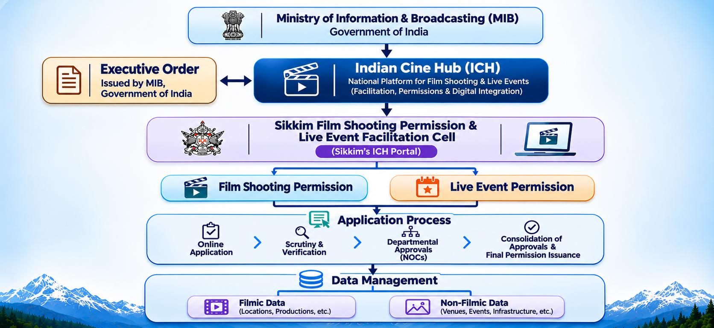

Film and host events in Sikkim
One application. Multiple departments. Consolidated permission.

Shooting Locations: Virtual Location Recce
Pre-visualise your shoot in Sikkim. View each notified filming location in 360° and check access, best season and permits. Save recce cost, plan efficiently and finalise before you travel.
Event Locations
Approved event venues with capacity and best season. View each venue in 360° before you travel. Pre-approved venues may receive expedited processing, subject to statutory and safety requirements.
Achievements
Executive Order on Film Shooting and Live Events
About Us
Sikkim Film Connect is the Single Window Facilitation Portal of the Sikkim Live Events and Film Shooting Facilitation Cell, under the Information & Public Relations Department, Government of Sikkim. It is Sikkim's portal on the Indian Cine Hub (ICH) of the Ministry of Information & Broadcasting.

Why this Executive Order
- Multiple permissions from different government departments.
- Fragmented approval processes and coordination challenges.
- Uncertain timelines for producers and event organisers.
- No unified digital facilitation mechanism.
- Need for stronger safety, environmental and disaster management protocols.
- Opportunity to position Sikkim as a national and international destination for films and live events.
The need: a transparent, predictable, technology-driven and investor-friendly regulatory framework.
Vision and Objectives
- Establish a Single Window Clearance System.
- Ensure transparent and time-bound permissions.
- Promote Sikkim as a preferred film shooting destination.
- Attract national and international live events.
- Encourage private investment and public-private partnerships.
- Generate local employment and business opportunities.
- Protect the environment, public safety and cultural heritage.
- Strengthen inter-departmental coordination.
Two Sectors Covered
🎬 Film Shooting
Feature films · Television programmes · Web series · Documentaries · Advertisements · Music videos · Digital content
🎤 Live Events
Concerts and music festivals · Cultural programmes · Sporting events · Adventure events · Exhibitions and conferences · Wellness festivals · Fairs and community celebrations
Institutional Framework
- State Level CommitteeChief Secretary, Chairperson. Policy guidance, monitoring and inter-departmental coordination.
- State Nodal Department: IPRSecretary, IPR, State Nodal Officer. Single-point coordination and implementation.
- Sikkim Facilitation CellOperational secretariat and digital facilitation.
- District-level Committees & Competent AuthoritiesDistrict Collectors, Police, Fire, Forest, Tourism and other departments.
Role of the IPR Department
- Act as the State Nodal Department.
- Administer the Single Window Clearance System.
- Coordinate with all concerned government departments.
- Facilitate processing of film and live event applications.
- Monitor approval timelines and service delivery.
- Coordinate with the Ministry of Information & Broadcasting.
- Facilitate integration with the Indian Cine Hub Portal.
The Facilitation Cell
- Develop and maintain this portal.
- Facilitate permissions and NOCs.
- Map filming locations and event infrastructure across the State.
- Maintain databases of venues, vendors and service providers.
- Prepare an Annual State Event Calendar.
- Develop Standard Operating Procedures and Green Event Guidelines.
- Develop event safety and crowd management protocols.
- Collect statistics and analyse economic impact.
Defined Approval Timelines
Maximum processing timelines under Clause 23 (working days).
Delays are recorded with reasons. Delayed applications are automatically escalated to the State Nodal Officer. Special laws governing protected and restricted areas continue to apply.
Expected Outcomes
Faster and more transparent permissions · Improved ease of doing business · More tourism and economic activity · Employment for local communities · Opportunities for local artists and creative professionals · National and international productions and events · A stronger creative economy · Greater visibility for Sikkim.
Events: Watch Live
Concerts, festivals and cultural events across Sikkim. Watch live from anywhere in the world in HD, 360° or full VR.
Permission Process
How to Apply
The Facilitation Cell is the single point of contact for filming and live events in Sikkim. It coordinates with the nodal officers of every department concerned, so you get all clearances through one online application.
- Select PermissionChoose Shooting Permission or Live Event Permission and log in.
- Fill in DetailsFill in the project or event details and upload the documents.
- Choose LocationsSelect one or more shooting locations, or the event venue.
- View Fee SummaryThe fee is calculated automatically as per the Rate Chart.
- Make Secure PaymentPay by UPI, credit / debit card, net banking or wallet.
- Receive Application No.Download the acknowledgement and track progress under My Application.
Rate Chart
Fees payable to the IPR Revenue Head. (Sample rates.)
Shooting Permission
Live Event Venues
Database: Filmic & Non-Filmic Resources
Local talent, crew and services for shoots and events in Sikkim. Hiring from the State saves travel costs for your team.
Contact
Ms. Annapurna Alley
Secretary, State Nodal Officer
IPR Department, Government of Sikkim
📞 9775417549
Mr. Bishal Khawas
Additional Director, Film Section
IPR Department, Government of Sikkim
📞 9775417549
Address
Soochna Bhawan,
Information & Public Relations Department,
Government of Sikkim,
Metro Point, 5th Mile,
Gangtok, Sikkim 737101
✉ ledcs@ipr.com